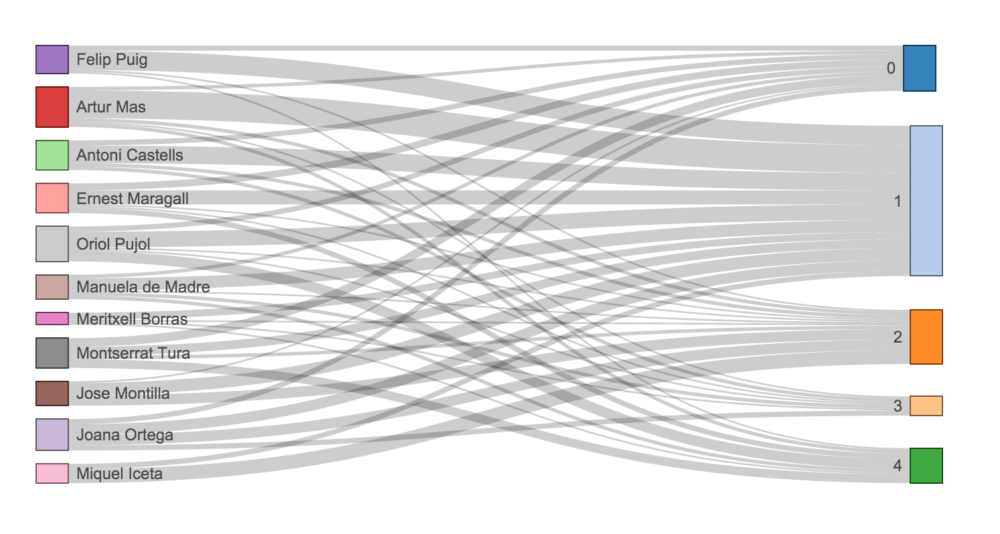

Visualization
With this project, the saying could not be more true: “A picture is worth a thousand words!”
So in order to present the results, several dynamic figures were generated to allow a better understanding of the data.
Cloud Text of top-words from topics

Word size measures the importance of the word to describe one of the topics.
Number of documents by topic mentioning a politician from each party
Politicians linked to topics
The links show how much each politician is appearing in documents from each topic.